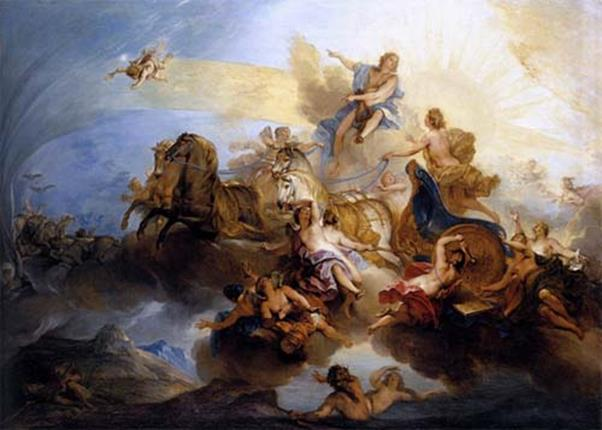

Lâu đài của thần Mặt trời-Hélios lúc nào cũng tràn ngập ánh sáng. Những chiếc cột vàng, cột bạc, những đồ đạc quý giá bằng ngà voi và các thứ kim cương, ngọc thạch, đồng đỏ, đồng đen lúc nào cũng óng ánh, sáng rực lên như khoe tài khoe sắc. Khắp cung điện, trong ngoài, đâu đâu cũng chói lọi ánh sáng, rực rỡ ánh sáng, ngời ngời ánh sáng. Ở lâu đài này chỉ có buổi trưa, chẳng hề một ai biết đến cái gọi là chiều tà và hoàng hôn mờ xám. Còn đêm đen thì lại càng xa lạ hơn nữa. Chưa có một người trần thế nào đặt chân tới nơi uy nghi lộng lẫy này và thật ra cũng chẳng ai biết đường mà lần mò đến.
Thế mà một hôm có một chàng trai, một cậu thiếu niên dám tới lâu đài này. Cậu ta đi vội vã, song đôi lúc cũng phải dừng bước để ngắm nghía vẻ mỹ lệ và hùng vĩ của tòa lâu đài. Cứ xem dáng đi vội vã ấy người ta có thể đoán chắc được rằng cậu có một việc gì khẩn thiết lắm cần phải tới tòa lâu đài này để tường trình. Cậu ta đã đi qua cổng lớn và cửa ngoài. Bây giờ cậu tiến thẳng vào gian phòng uy nghi lộng lẫy nhất, nơi thần Hélios đang ngự trên ngai vàng. Cậu đến trước mặt vị thần chói lọi ánh sáng và hừng hực hơi nóng. Vị thần nhìn cậu với đôi mắt âu yếm pha đôi chút ngạc nhiên đoạn cất tiếng hỏi:
- Thế nào, Phaéton145, con trai yêu quý! Con lên đây có việc gì thế? Chuyện lành hay chuyện dữ nào đã xảy ra khiến con phải lặn lộn lên đây mà không báo cho cha biết trước?
Cậu thiếu niên đáp lại:
- Cha thân yêu của con! Cha ơi, con lên đây tìm gặp cha vì một việc vô cùng hệ trọng. Con muốn biết cha có phải là cha đích thực của con không? Ở trường học các bạn con chế nhạo con rằng con nhận xằng là con của thần Hélios, rằng thần Hélios, không đời nào lại để một đứa con sống dưới trần. Con đã hỏi mẹ, mẹ bảo, đích thực con, Phaéton, là con của thần Mặt trời-Hélios vĩ đại. Mẹ bảo, tốt nhất là con lên hỏi cha. Vậy cha hãy trả lời ngay cho con biết để con về nói cho tụi bạn con nó tin.
Thần Hélios mỉm cười, đưa tay nâng chiếc vương miện đang tỏa sáng ra khỏi đầu để Phaéton khỏi chói mắt, Hélios vẫy con lại gần và nói:
- Con thân yêu của cha! Con đúng là, đích thực là con trai của ta. Đó là một điều chắc chắn. Để cho con tin hẳn vào lời ta nói, ta sẽ ban cho con một đặc ân: con muốn điều gì ta sẽ chiều lòng con ngay, làm cho con được hoàn toàn thỏa mãn. Và đặc ân này ta chỉ ban cho những người thân thiết nhất. Ta xin lấy nước của con sông Styx thiêng liêng dưới âm phủ ra để chứng giám cho lời cam kết của ta đối với con. Thế nào? Con tin vào lời ta nói chứ?
Phaéton giờ đây thì không còn nghi ngờ gì nữa. Lời nói của cha vừa rồi làm cho cậu tin hẳn, tin chắc chắn mình đích thực là con của thần Mặt trời. Bây giờ cậu chỉ còn mỗi việc là nghĩ xem mình nên xin cha ban cho mình cái gì, chà, kể ra thì thật là khó nghĩ vì cậu có biết bao nhiêu là ước muốn. Nhưng nghĩ một lúc thì chẳng có gì và khó. Cậu đã chẳng từng theo dõi quan sát công việc của cha mình, vị thần Mặt trời-Hélios hàng ngày đánh cỗ xe và những con thần mã chạy trên bầu trời bao la với một niềm kiêu hãnh và khâm phục đó sao! Những lúc ấy cậu thường tự bảo: “Kìa kìa, cha mình đang điều khiển cỗ xe ấy đấy” và nghĩ lan man đến biết bao nhiêu điều kỳ diệu trong công việc của cha mình. “Làm sao cha ta lại có thể ngồi được trên cỗ xe có những con thần mã hung hăng, lúc nào cũng phóng như bay thế kia? Không biết cha ngồi trên xe có chóng mặt không? Chắc ngồi trên cỗ xe đó đem ánh sáng chiếu rọi cho thế gian thích thú lắm... Chả thế mà cha chẳng bao giờ từ bỏ công việc của mình cả”. Và cậu đã từng ước mơ có ngày được ngồi trên cỗ xe thần diệu ấy. Bây giờ lời hứa của cha làm cậu vụt nhớ lại ước mơ đã từng ấp ủ trong trái tim mình. Không ngần ngại gì, cậu nói một cách hồn nhiên với cha:
- Cha ơi! Cho con thay cha điều khiển cỗ xe một ngày, một ngày thôi nhé! Những lúc nhìn cha đang cưỡi xe ở trên trời, con chỉ ước có mỗi một điều ấy. Thế nào cha có bằng lòng không nào? Nhưng cha đã hứa với con rồi cơ mà... Con chỉ xin cha có mỗi điều ấy thôi. Con sẽ một mình thay cha một ngày đánh cỗ xe đi chiếu sáng cho khắp thế gian...
Thần Hélios lặng người đi. Thần có ngờ đâu tới cái ước muốn này của cậu con trai của mình. Thật tai hại! Thần giận mình đã trót hứa và viện dẫn con sông Styx ra chứng giám cho lời hứa của mình. Bây giờ chỉ còn cách thuyết phục Phaéton thay đổi ý muốn đó. Thần nói:
- Phaéton, con thân yêu của cha! Đây là điều duy nhất cha không thể làm theo ý muốn của con được. Cha rất muốn con thay đổi điều thỉnh cầu con vừa nói. Cha sẽ nói cho con biết nguyên do vì sao. Việc điều khiển cỗ xe do những con thần mã kéo là một việc vô cùng khó khăn và nguy hiểm. Không một vị thần nào có thể làm được việc này thay cha, ngay cả đến thần Zeus, đấng phụ vương cai quản thế giới Olympe và những người trần thế đoản mệnh. Còn con, tuy là con của ta nhưng con lại là người trần thế đoản mệnh vì mẹ con, nàng Clymène, con của Titanide Téthys, không được các vị thần Olympe ban cho đặc ân bất tử. Một người trần thế không thể nào đảm đương được công việc của thần linh. Hơn nữa con có biết đâu tới những khó khăn trong chặng đường mà cỗ xe phải đi qua. Từ dưới biển lên, cỗ xe phải leo lên một con dốc gần như thẳng đứng mà những con thần mã mới sáng ngày ra còn sung sức như thế cũng phải trầy trật lắm mới kéo được cỗ xe lên an toàn; chạy tới lưng chừng giời thì lúc đó con không thể tưởng tượng được đã lên cao đến như thế nào. Nhìn xuống dưới, hai bên là hai vực thẳm sâu hun hút. Đến cha nhiều khi cũng không dám nhìn xuống vì sợ chóng mặt, hoa mắt. Nhưng đến lúc cỗ xe xuống dốc thì lại càng khó khăn hết chỗ nói. Đường đi như lao thẳng xuống biển nếu không vững tay cương thì cỗ xe lộn ngược và rơi xuống đáy Đại dương. Điều khiển được những con thần mã lúc này thật cực kỳ vất vả, cực kỳ căng thẳng. Bây giờ là lúc chúng đã mệt nên chúng rất dễ cáu kỉnh và bướng bỉnh. Liệu như con cầm cương điều khiển thì chúng có còn là những con thần mã nữa không, hay chúng biến thành những con nghịch mã, những con ngựa bất kham như lũ ngựa rừng hoang dại vừa bị bắt?
Chắc con tưởng tượng ra trên đường cha đi làm việc hàng ngày có biết bao điều kỳ lạ và tuyệt diệu: nào những cung điện, lâu đài với đủ các kiểu, các hình dáng, cái nào cũng nguy nga, tráng lệ, nào con đường cha đi hai bên toàn là cây vàng trái ngọc hoặc những cánh đồng hoa muôn màu muôn sắc như kim cương... Không, không phải đâu con ạ! Đó là một con đường mà hai bên toàn những loài thú hung hăng và nguy hiểm đến tính mạng. Con Bò tót mắt đỏ hằn những tia máu. Con Sư tử nanh nhọn móng sắc. Con Bò cạp nọc độc giết người. Con Tôm hùm có đôi càng như hai cái kìm sắt.146 Khi cỗ xe chỉ cần buông lỏng tay cương đi chệch khỏi con đường nhỏ dài và hẹp là chúng không bỏ lỡ cơ hội kiếm ăn. Thôi cha chỉ cần kể cho con nghe sơ qua như thế. Con nên nghe lời cha thay đổi ý định đó đi. Thế gian chúng ta đang sống còn biết bao điều hay, điều lạ nữa, còn biết bao nơi hoa thơm cỏ lạ... Con muốn gì, muốn đến nơi nào cha cũng sẽ đưa con tới nơi đó. Cha không muốn cho con đánh cỗ xe thần là vì cha lo ngại cho tính mạng của con, con chưa đủ tài năng để đảm đương một công việc vượt quá sức con, vượt quá sự hiểu biết và kinh nghiệm của con.
Nhưng lúc này thì chẳng một lời khuyên nhủ nào làm Phaéton từ bỏ được ý muốn, ước mơ của mình cả: nhất là ý muốn ấy, ước mơ ấy đang như một trái cây chín trong tầm tay chỉ cần đưa tay ra hái là được. Phaéton đã tưởng như mình đang đứng trên cỗ xe thần, đang ghì cương cho cỗ xe lao đi băng qua muôn trùng nguy hiểm. Và cậu đang khát khao được thử thách trong nguy hiểm. Vì thế những lời khuyên nhủ của thần Hélios không thể nào làm Phaéton thay đổi được ý định. Cậu nói với cha:
- Con sẵn sàng chấp nhận mọi nỗi hiểm nguy. Cha dù sao cũng đã hứa với con rồi cơ mà. Và lời hứa của cha, một vị thần bất tử, là bất di bất dịch. Con mà cưỡi trên cỗ xe thần một ngày, chỉ một ngày thôi, là tụi bạn con không còn đứa nào dám bảo con là nhận xằng nữa... Cha phải cho con lên xe đi!
Thần Hélios không thể nào khước từ được nguyện vọng của cậu con trai. Thần dẫn con ra xe. Đây là lúc sắp đến giờ lên đường. Những cánh cửa Đông đã nhuộm đỏ và nàng Bình minh đã ra đi với đôi má ửng hồng. Các vì sao từ giã bầu trời và ngôi sao Mai thì nhợt nhạt hẳn đi. Các nữ thần Heures-Thời gian chỉ chờ lệnh là mở tất cả mọi cửa. Những con thần mã đã thắng vào cỗ xe vàng chói lọi. Phaéton lòng tràn ngập sung sướng và kiêu hãnh bước lên cỗ xe. Thần Hélios lòng đầy lo âu và hối tiếc. Thần bôi lên khuôn mặt non trẻ của con một thứ mỡ thần để cho da mặt con khỏi bị bốc cháy. Tiếp đó thần đội lên đầu con chiếc vương miện của mình. Thần nói với con.
- Phaéton con thân yêu! Đường đi cực kỳ nguy hiểm. Con phải luôn luôn nhớ lời cha dặn: ghì cương cho chắc. Việc này khó lắm đấy. Con phải luôn luôn đánh xe theo vết đường cha đã từng đi, đừng phóng xe lên cao quá làm cháy bầu trời. Nhưng cũng đừng đi tụt xuống thấp làm cháy mặt đất. Phải giữ tay cương cho thẳng kẻo xe đi chệch sang phải hay sang trái. Con phải nhớ kỹ rằng hướng đi của xe bao giờ cũng phải ở giữa Con rắn và Bàn thờ147. Cha còn biết bao điều muốn dặn dò con thật kỹ nhưng đã đến lúc đêm đen rời bước khỏi bầu trời, con phải lên đường rồi. Thôi cha đành phó mặc con cho Số mệnh. Tuy nhiên cho đến lúc này đây, cha vẫn tha thiết mong con thay đổi nguyện vọng của mình. Hãy để công việc chiếu sáng thế gian cho cha. Con có biết không, dấn thân làm công việc cực kỳ khó khăn và nguy hiểm này là con đã tự kết liễu đời mình đấy. Con hãy nói với cha, con từ bỏ nguyện vọng này đi... nói đi... nào!
Nhưng Phaéton nhìn cha mỉm cười âu yếm và lắc đầu. Cậu đứng thẳng người lên, căng dây cương và giật mạnh một cái. Những con ngựa hí vang lên và tung vó phi như bay. Lửa từ lỗ mũi chúng phun ra một vệt dài. Chúng kéo cỗ xe nhẹ nhàng, xuyên qua sương mù bắt đầu lên dốc để leo lên bầu trời. Phaéton sung sướng, ngất ngây. Cậu nhìn xuống thấy những con thần mã đang nện vó lên những đám mây trắng bồng bềnh từ dưới Đại dương đùn lên. Cậu nhìn lên vòm trời cao xanh ngăn ngắt và cậu giật cương cho cỗ xe bay lên. Cậu tưởng mình như là một đấng thần linh có trách nhiệm nặng nề cai quản cả bầu trời và mặt đất, giờ đây đang phải đi thị sát nhiều nơi. Song niềm hào hứng của Phaéton chỉ được giây lát. Cỗ xe bắt đầu tròng trành, nghiêng ngả. Lũ ngựa thì phi ngày càng nhanh. Tay Phaéton vẫn cầm cương mà không điều khiển được chúng. Với đôi tay yếu ớt của mình, Phaéton không làm sao ghì được dây cương, kìm bớt sức phóng của những con thần mã. Và những con thần mã khi thấy lỏng dây cương thì chúng làm chủ. Chúng chạy theo ý thích của chúng, khi lên cao, khi xuống thấp, khi chệch sang trái, khi xiên sang phải. Và cái điều phải xảy ra đã xảy ra: lũ ngựa chạy thế nào mà xuýt nữa xô vào con Bọ cạp, Phaéton hoảng hồn khi trông thấy con vật khủng khiếp đó. Lũ ngựa vội quay ngoắt sang một bên. Cỗ xe như lao thẳng vào con Tôm hùm có đôi càng khổng lồ. Phaéton kinh hãi, thét lên một tiếng. Và trong lúc sợ hãi rụng rời như thế cậu đã buông rơi dây cương. Lũ ngựa bây giờ thì mặc sức tung vó. Chúng chạy không theo một kỷ luật, trật tự nào cả. Chúng tránh con Tôm hùm bằng cách lao vọt thẳng lên trời rồi lại đâm bổ xuống đất, gần như sà xuống các ngọn núi. Thế là mặt đất bốc lửa cháy đùng đùng. Những ngọn núi cao bốc cháy trước tiên. Ngọn núi Ida, ngọn núi Hélicon, nơi những nàng Muses, con gái của thần Zeus ngự trị, bốc lửa, rồi đỉnh Parnasse, đỉnh Olympe bốn mùa mây phủ, cũng ngùn ngụt cháy theo. Lửa cháy sà xuống các thung lũng tràn vào các khu rừng rồi lan ra các cánh đồng. Chẳng một ngọn núi nào không bị lửa thiêu đốt cả. Từ núi Cithéron xanh ngắt đến dãy Caucase cao ngất rồi đến Pélion, Ossa, Tmolos điệp điệp trùng trùng, tất cả đều bốc cháy dữ dội. Khói bốc lên trời mù mịt làm cho Phaéton cay xè cả mắt và chẳng còn biết cỗ xe đang chạy trên con đường nào. Nước ở các con sông sôi lên sùng sục tưởng chừng như có ai chất củi đất từ dưới đáy sông. Và cứ thế chẳng mấy chốc các con sông bốc hơi hết sạch cả nước và trơ ra cái bụng đầy bùn lầy cát sỏi của mình. Biết bao đô thị bị thiêu trụi không còn một dấu vết gì ngoài những đống tro, biết bao bộ lạc đang sống yên vui với những cánh đồng lúa mì hoặc với những đàn súc vật, nay chết cháy hết. Các tiên nữ Nymphe vốn sống trong rừng sâu hoặc bên bờ suối, khóc than thảm thiết, cuống cuồng chạy trốn vào hang sâu. Mặt đất bị cháy đến nỗi nứt nẻ toang hoác cả ra để cho những tia mặt trời, những tia lửa của cỗ xe của thần Hélios, rọi thẳng đến vương quốc âm u của thần Hadès. Thế giới âm phủ quen sống trong tối tăm nay vì thế sinh ra hỗn loạn, rối bời. Biển khơi mênh mông những nước thế mà cũng bắt đầu cạn. Các vị nam thần, nữ thần Biển khốn khổ vì oi bức, chạy nháo nhào nơi này nơi khác để tránh cơn nóng chưa từng thấy giáng xuống thế giới của mình. Tình hình rối loạn và khủng khiếp đến nỗi nữ thần Mặt trăng-Séléné, người em gái của thần Hélios, không hiểu nổi tại sao ông anh Mặt trời của mình lại đánh cỗ xe chạy lung tung như thế.

PHAÉTON trên cỗ xe của thần Mặt Trời
Còn nữ thần Gaia, Đất mẹ của muôn loài, thì không thể nào chịu đựng nổi. Nữ thần đứng hẳn lên, giơ tay chỉ lên trời thét gọi thần Zeus, quát bảo:
- Hỡi thần Zeus vĩ đại, đấng phụ vương của thế giới thần thánh và loài người đoản mệnh! Làm sao mà lại xảy ra ra cơ sự này? Liệu có phải đây là ngày tận thế của ta không? Các vị thần cai quản thế gian ra làm sao mà để cho nó trở lại cảnh hỗn mang như thế này? Poséidon lẽ nào phải chịu một cái chết thảm khốc, chịu tiêu tan hết cả thế giới Đại dương của mình? Còn thần Hadès? Thần Atlas nữa? Làm sao Atlas có thể chịu đựng được cái nóng khủng khiếp để giơ vai ra gánh đỡ bầu trời? Hãy mau mau cứu thế giới thần thánh khỏi tai họa này nếu không thì cung điện Olympe chẳng mấy nữa mà sụp đổ! Hãy mau mau cứu lấy tất cả những gì chưa bị ngọn lửa thiêu đốt!
Từ trên bầu trời cao xa tít tắp, các vị thần nghe thấy tiếng thét của nữ thần Gaia. Các vị nhìn xuống thấy mặt đất đen đang bốc khói ngùn ngụt. Các vị thấy ngay trọng trách là phải mau mau cứu thế gian và loài người. Thần Zeus từ khi nghe thấy tiếng cầu cứu của nữ thần Gaia, đã thấy ngay mình phải ra tay tức khắc. Và không cần phải triệu tập một cuộc họp các chư vị thần linh để bàn bạc phán quyết, thần Zeus vung tay giáng một búa. Làn chớp mạnh như một cơn bão thổi tắt ngay những ngọn lửa hung hãn... Còn đòn sét giáng ngay vào cỗ xe của Phaéton, cỗ xe vỡ tan tành. Những con ngựa điên cuồng bật ra khỏi cỗ xe lộn nhào từ chín tầng cao rơi xuống biển. Còn Phaéton thân hình bốc cháy ngùn ngụt, rơi... rơi như một vì sao sa xuống trần. Con sông Éridan, một con sông thần thánh và bí ẩn đến nỗi chưa từng một người trần thế nào nhìn thấy, mở rộng lòng đón nhận Phaéton. Nó dập tắt lửa đang cháy trên người cậu, làm cho thi hài cậu tươi mát, đẹp đẽ lại như khi chưa bị cháy. Những tiên nữ Nymphe thương xót người con trai bất hạnh, vớt xác Phaéton lên và đắp cho cậu thiếu niên đó một nấm mồ. Còn thần Mặt trời lòng đau như cắt, chẳng thiết gặp một ai, vào trong lâu đài đóng chặt cửa lại, nằm suốt một ngày để mặc cho những đám cháy dùng chút lửa của mình chiếu sáng mặt đất.
Được tin con chết, tiên nữ Clymène đau đớn rụng rời. Nàng đi tìm xác con trên mặt đất bao la. Trải qua bao ngày dò hỏi hết nơi này đến nơi khác, cuối cùng Clymène đến bên dòng sông Éridan. Nhưng Phaéton đã được đất đen phủ kín và người mẹ thân yêu của cậu chỉ thấy được nấm mồ của con. Những chị gái của Phaéton, các nàng Héliades148 đau đớn xót thương cho số phận của em mình đã ngồi bên nấm mồ khóc mãi không nguôi. Người xưa kể, các nàng đã khóc suốt bốn tháng trời. Các vị thần cảm động trước tấm lòng yêu thương em của các nàng Héliades đã biến các nàng thành những cây bạch dương, những cây bạch dương lúc nào cũng gục đầu xuống dòng sông Éridan như vẫn đang than khóc cho số phận người em trai yêu quý. Còn nước mắt của những nàng Héliades và cả nhựa của những cây bạch dương được các vị thần biến thành những viên ngọc hổ phách.
[145] Tiếng Hy Lạp phaéton: rực sáng.
[146] Tên những ngôi sao, chòm sao: le Taureau, le Lion, le Scorpion, le Cancer.
[147] Tên những ngôi sao, chòm sao: Le Serpent, L’Autel.